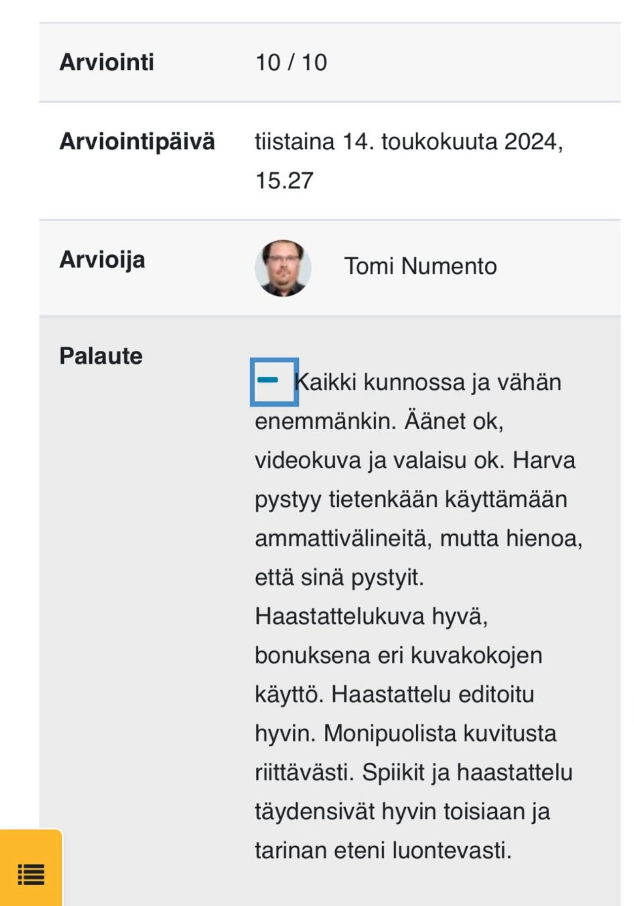

Omavalintainen videoprojekti
Kurssin päättötyönä tehtiin itsenäisesti suoritettava videoprojekti. Aiheen sai valita vapaasti, kunhan se muodosti uutiskatsauksen tai esittelyn jostakin tietystä aihealueesta. Valitsin aiheekseni "Valokuvaus - Harrastuksesta ammatiksi", jossa kävin haastattelemassa video- ja valokuvaaja Antti Vähää hänen työhuoneellaan.
Työ käynnistyi käsikirjoituksen laatimisella ja haastattelukysymysten laatimisella, jonka jälkeen suoritettiin kuvaus vapaavalintaisella laitteistolla. Tässä videomateriaali kuvattiin Canon R5 videokameralla, ja selostajan ääniraidat nauhoitettiin Roden Podmicilla. Käytössä haastatteluvastauksia varten oli Roden Lavalier nappimikit. Lopuksi videoon tehtiin vielä leikkaus ja värimäärittely Adobe Premierellä ja ääni viimeisteltiin Adobe Auditionilla.
Video on julkaistu kokonaisuudessaan Youtubessa, pääset katsomaan sen tästä.
Käytetyt laitteet ja ohjelmistot:
Opettajan palaute
